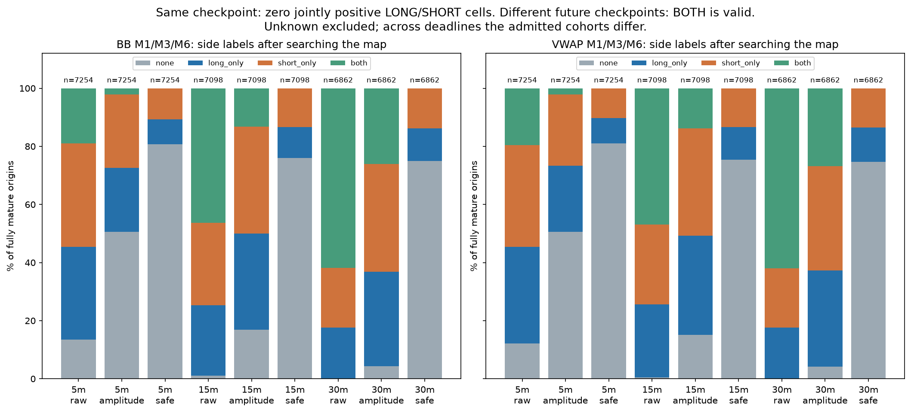
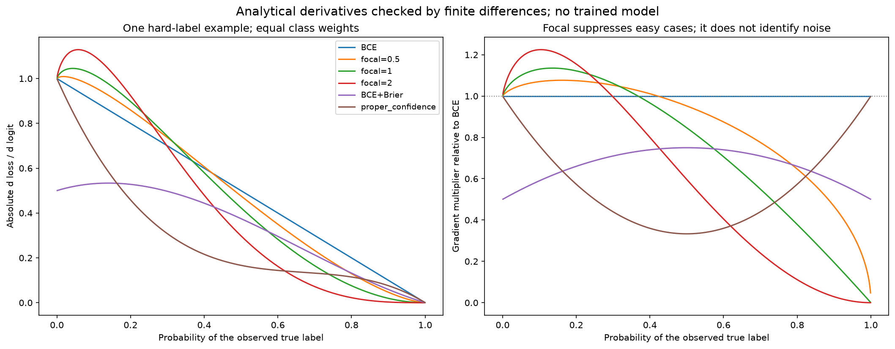
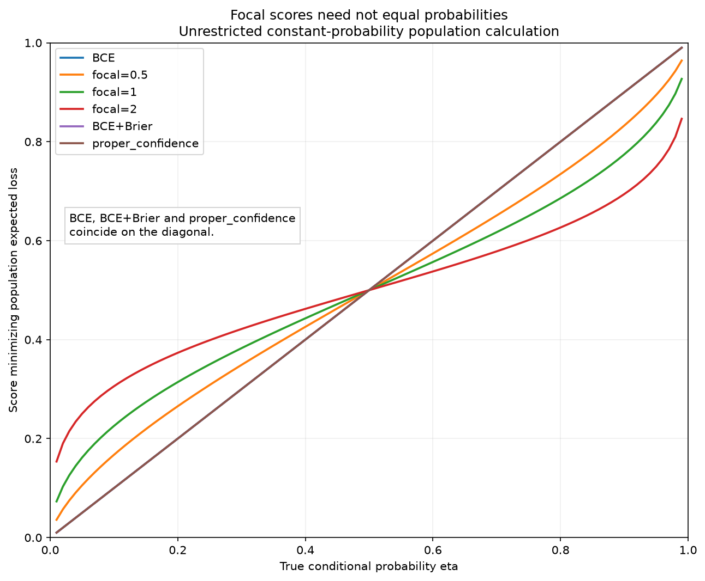

Исследование · 22 октября 2026 · код, математика и первичные публикации · новые модели не обучались
Облегчить поиск возможности: что менять в target, loss и общей памяти LONG/SHORT
Предлагаемое решение. Сохранить смысл цели, начать с общего представления и согласованных event/direction вероятностей. Усилить структуру supervision через время, величину и риск. Focal добавлять только после измерения, какие примеры расходуют градиент. Две полные модели нужны при подтверждённом вреде совместного обучения; противоположные названия LONG/SHORT сами по себе такого вреда не создают.
Что установлено в текущем коде
В crossing_map.py реализованы функция факторизованного loss и её аналитические производные. Разметка карты отдельно строит LONG/SHORT признаки raw, amplitude и safe, затем состояния NONE/L_ONLY/S_ONLY/BOTH. Для этой карты пока нет обученного нейросетевого backbone: нельзя приписывать ей поведение Mamba-2, CNN, LSTM или TCN.
В репозитории уже есть полезные, но другие механизмы: BB learner использует gradient boosting; side_features ориентирует returns/flow/imbalance по стороне; path_model разделяет время take/stop, категорию и стоимость; MixedPlayer содержит быстрый LSTM на 900 секунд и медленный LSTM до 2760 M1 состояний с причинным извлечением прошлого. Название event в этих модулях не всегда означает ту же amplitude-opportunity, что в новой карте.
Поэтому ниже разделены четыре уровня доказательств: измеренные свойства сохранённого target; проверенная математика loss; результаты внешних исследований на их задачах; предлагаемые рыночные эксперименты. Ни один из них отдельно не доказывает рост капитала.
LONG и SHORT: противоположность зависит от операции над будущим
Для одного входа t, одного и того же checkpoint u и одинаковой комиссии f:
NL=bid(u)−ask(t)−f
NS=bid(t)−ask(u)−f
NL−NS=2·[mid(u)−mid(t)]
NL+NS=−[spread(t)+spread(u)+2f]
Это один общий ценовой результат и общий отрицательный вклад издержек. Полезно предсказывать общее изменение mid и spread, а net обеих сторон получать согласованно; два независимых денежных регрессора для одной ячейки могут нарушать эту связь. В 195917 известных ячейках текущей карты одновременно положительных LONG и SHORT нет. Максимальная ошибка тождества для разности — 5,7·10−14.
Но текущая opportunity-цель ищет подходящую ячейку отдельно для каждой стороны. LONG может найти рост раньше, SHORT — падение позже. Операция max/any по разным будущим временам уничтожает простую антисимметрию. На BB M1/M3/M6, 5 минут, amplitude≥2R: NONE=3666, LONG_ONLY=1604, SHORT_ONLY=1827, BOTH=157 из 7254 полностью известных точек. В 52,7% точек стороны имеют одинаковые бинарные метки: обе 0 или обе 1. Поэтому yS=1−yL неверно.
Даже когда gain-before-stop делает два успеха взаимоисключающими, остаётся NONE: взаимоисключение не означает исчерпывающую бинарную противоположность. И MAE_LONG связан с нижними экстремумами пути, а MAE_SHORT — с верхними; это тоже не просто смена знака.

Реальные метки сохранённой недели. Сравнение сроков использует разные завершённые выборки. Столбцы не являются независимыми сделками.
Правильная симметрия для проверки представления: при зеркальном преобразовании рынка LONG должен обмениваться с SHORT, а событие «есть возможность» сохраняться. Это fL(MX)≈fS(X), а не fS(X)=1−fL(X). Нужно менять местами bid/ask глубины и upper/lower, знаки returns/imbalance и направленных flow; сохранять spread, объём, часы и маски. Для линейного STFT центрированного сигнала меняется знак комплексных коэффициентов, а мощность сохраняется. Такая регуляризация — проверяемая гипотеза; реальные асимметрии исполнения нельзя принудительно стирать.
Когда focal loss помогает, а когда фокусируется на неправильной трудности
Focal был предложен для плотной детекции с огромным количеством легко распознаваемого фона. Он снижает вклад хорошо классифицированных примеров; авторы отдельно отличают это от robust-loss, подавляющего выбросы. Перенос на финансовую задачу требует диагностики трудных примеров. Lin et al., Focal Loss.
FL=−αy(1−pt)γ log(pt), pt=p при y=1, иначе 1−p
dFL/dz=αy(p−y)(1−pt)γ[1−γptlog(pt)/(1−pt)]
Множитель loss (1−pt)γ нельзя выдавать за полный множитель градиента: его собственная производная тоже участвует. При γ=2 пример с pt=0,9 получает 0,029 градиента BCE, а с pt=0,1 — 1,224. Это полезно, если второй пример содержит ещё не освоенную закономерность. Если это случайная граница G/R, единичный микроперекросс, пропуск данных или неразрешимая из текущего X неопределённость, focal не знает, что перед ним.

Аналитические производные проверены конечными разностями в 122 точках для каждого из шести вариантов. Смесь BCE+Brier означает 0,5·BCE+0,5·Brier; абсолютный масштаб нельзя превращать в вывод о скорости обучения без учёта learning rate.
На текущем BB raw-event за 15 минут положительны почти 99% точек. Если поставить всем константный BCE-prior и заменить loss на focal γ=2, около 99,97% суммы модулей градиентов окажется у редких отрицательных примеров. Это расчёт в фиксированной точке, не результат обучения. Он показывает перераспределение внимания, но не появление информации. Для основного amplitude-event за 5 минут доля positives≈49,5%; аргумент «надо исправить сильный дисбаланс event» здесь отсутствует.
Focal не является строго proper оценкой вероятности. В аналитическом population-опыте, где истинная вероятность η=0,1, минимум ожидаемого focal γ=2 находится при score≈0,306. Это согласуется с теоретическим результатом Charoenphakdee et al. При этом на конечных нейросетях focal способен улучшить эмпирическую calibration за счёт изменённой оптимизации и регуляризации; такой результат получен в Mukhoti et al. Противоречия нет: population optimum и практическая calibration конечной модели — разные утверждения.

Это оптимизация скалярной ожидаемой функции потерь при известной η, а не reliability diagram обученной модели. Три proper варианта совпадают на диагонали.
Рабочая настройка: сначала BCE/CE и сбор распределения градиента по классам, близости к порогу, повторным event ID и режимам. Затем небольшой ряд γ∈{0;0,5;1;2} с равными весами классов. Веса α подбирать отдельно от частоты сделок и совместно с γ; не складывать без поправки oversampling и большой inverse-frequency weight. Значение γ=2, α=0,25 из детекции не является настройкой для рынка. Постепенное увеличение γ после начала обучения можно проверить как отдельный вариант, но не объявлять необходимым.
Критерий выбора — proper NLL/Brier после отдельной временной calibration, precision/recall при одинаковой доле допущенных сигналов и дальнейший экономический replay. Улучшение train focal-loss или F1 недостаточно. Survival hazards на первом этапе оставить на likelihood: focal меняет смысл отдельных hazard scores и затем всей произведённой из них survival-кривой.
Какие гибриды имеют осмысленную роль
Основание для вероятностных и квантильных критериев — теория proper scoring rules. Для survival есть нейросетевой likelihood Nnet-survival; для согласованных упорядоченных порогов — CORAL. Применение этих механизмов к crossing-map предлагается здесь, но ещё не испытано.
Конкретная проверенная confidence-функция при ε=1/3:
Lconf=BCE−(4/3)(p−y)²
dLconf/dz=(p−y)[1/3+(2/3)(2p−1)²]
E[dLconf/dz|X]=(p−η(X))·w(p), w(p)>0
Последнее равенство даёт единственный условный минимум p=η. Здесь важен интегрированный loss: произвольно умножить BCE на зависящий от p вес — другое действие, с дополнительной производной. Это аналитический кандидат, не установленная замена BCE. Аналогично class-weighted BCE оценивает αη/[αη+β(1−η)], а не исходную η: веса классов меняют вероятностный смысл.
Общий ориентир для weighting: минимум weighted BCE равен E[wY|X]/E[w|X]. Вес, зависящий только от X, при положительном значении сохраняет условную вероятность; вес по будущей прибыли, классу или повторяемости будущего event может её изменить. Event-weighting полезен для ограничения повторов, но задаёт иную популяцию примеров. Поэтому отдельно нужны метрики на событиях и calibration на реальном потоке исходных точек. Будущий event ID никогда не становится входной фичей.
ASL специально по-разному обрабатывает положительные и отрицательные multilabel-примеры; GCE исследуется как компромисс с устойчивостью к испорченным меткам. Это не основание объявить hard examples в нашем рынке ошибочными. Сначала проверяются источник, маски и определение события.
Мягкая граница G допустима, если точно назвать новую цель. Например, случайный порог G′ в заранее заданной полосе даёт soft target P(G′≤M) для наблюдённой магнитуды M. BCE тогда учит среднее этой новой величины, а не исходную вероятность M≥G. Обычное временное сглаживание может размыть момент возникновения возможности. Плавность метки сама по себе не является критерием качества.
В многозадачном loss головы карты усредняются по фиксированным семействам/исходным точкам. Число похожих линий не должно автоматически увеличивать вес задачи. Survival NLL суммирует поддержанную экспозицию до события/цензурирования; нормализация каждой строки на её случайную длительность меняет исходный likelihood. Денежные квантили обучаются только на явно заданной наблюдаемой когорте.
Когда нужны две модели, а когда достаточно двух способов читать общую память
Для общей памяти hθ(X) градиент равен сумме JθT∂Lk/∂h. Противоположные выходные ошибки не означают противоположных encoder-gradients. В проверенном примере zL=wX, zS=−wX, yS=1−yL обе BCE-задачи дают одинаковый градиент w (cosine=1). Это контрпример обязательному конфликту, а не доказательство отсутствия конфликта у наших обученных моделей.
Полное разделение оправдано, если после контроля loss-весов и мощности сеть устойчиво ухудшает одну или обе стороны на новых временных блоках, а отдельные модели это исправляют. Возможные причины: разные полезные признаки и временные горизонты, асимметрия исполнения/ликвидности, ограниченный общий state, доминирование easy opportunity-задачи над слабой directional-задачей. Нужны градиенты по блокам, learning curves и независимые результаты; отрицательный cosine одного minibatch недостаточен.
До двух полных сетей стоит проверить промежуточные варианты: общий encoder с side-conditioned readout; общие первые слои с отдельными последними блоками; небольшие private adapters; shared experts с отдельными gates. MMoE даёт пример последнего подхода. При несоразмерных градиентах применимая гипотеза — GradNorm; при конфликте — PCGrad. Эти механизмы не чинят неверный target.
Отдельная LONG-модель должна видеть и удачные, и неудачные LONG-точки, включая SHORT_ONLY и NONE. Обучать её только на победителях LONG нельзя. Сравнивать общий backbone P параметров с двумя backbone по P — смешивать специализацию с удвоением мощности. Нужны и matched-total-budget сравнение, и отдельная equal-per-side-capacity диагностика. Больше строк с одним и тем же будущим событием не означает больше независимой информации.
Архитектура задаёт доступ к сигналу, но не семантику стороны
Сравнение TCN и recurrent моделей поддерживает TCN как серьёзный baseline; оно не устанавливает победителя на наших crossing-labels. DeepLOB показывает осмысленность сочетания локальных свёрток книги и temporal LSTM, но его классификационная задача и данные другие. Mamba-2 исследует SSM/attention duality и вычислительную эффективность; из неё не следует преимущество в торговом сигнале. Для запуска нужен проверенный официальный backend, а не подмена любой SSM под этим названием.
Для контекста «сегодня и вчера с Лондона» рациональна общая схема входа: подробный короткий поток/DOM, более редкая M1 последовательность, причинные VWAP/bands и STFT, признаки времени и доступности. При TCN с указанной конфигурацией 10 блоков дают 4093 токена: около 68 минут на секундном шаге или 68 часов на минутном. Это структурный доступ, не измеренная эффективная память. Проверять её следует удалением/перестановкой только допустимого прошлого и измерением OOS-ухудшения, а не одной saliency-картой.
Знак нельзя восстановить из одной только инвариантной энергии: модули returns и мощности STFT полезны для активности/opportunity, но при зеркальном отражении не различают направление. Для directional-задачи нужны доступные signed returns/flow, отклонения от уровней и другая ориентированная информация. Смена backbone не возвращает информацию, уже удалённую представлением. Это ещё одно основание измерять полезность семейства фич отдельно для E и D.
Как использовать opportunity-голову и что настраивать отдельно
Смысл opportunity должен быть общим для всех backbone; иначе сравниваются разные задачи. При факторизации E и D:
P(L opportunity)=pE·(qL+qB)
P(S opportunity)=pE·(qS+qB)
P(NONE)=1−pE
Сумма вероятностей сторон может превышать 1 из-за BOTH. Две marginal sigmoid-головы сами по себе не определяют вероятность BOTH или объединённого события: формула 1−(1−pL)(1−pS) требует недоказанной условной независимости.
У opportunity три возможные роли: вспомогательное обучение representation; вероятностный множитель joint-выхода; маршрутизатор, который направляет редкие кандидаты в дорогую модель. Эти роли нужно проверять отдельно. Во время обучения direction-loss маскируется истинным известным E, а не предсказанным pE. Если умножать loss на обучаемый pE, сеть получает возможность уменьшать pE, чтобы избегать direction-loss. Жёсткий ранний gate также лишает ещё не найденные возможности обучения.
Если отдельная модель использует прогноз opportunity как вход, для её обучения нужны хронологические out-of-fold прогнозы. Истинное будущее E нельзя подавать как наблюдаемую фичу; in-sample прогноз также не является честной имитацией эксплуатации. Проблема разных выборок обучения и применения условной модели рассматривается, например, в ESMM; это полезная аналогия, а не доказательство применимости конкретного recommender метода к рынку.
Для каждого backbone могут отличаться calibration, рабочий threshold, learning rate и веса вспомогательных голов, размер state/receptive field и вычислительный режим. Но loss-семантика остаётся одной. Настройки opportunity зависят от распределения и качества его ошибок, а не от названия Mamba/LSTM. Рекалибровка допустима только по уже созревшим прошлым исходам; высокая pE сама не определяет сторону, размер позиции или ценность исполнения.
Порядок опытов без смешивания причин
- Зафиксировать chronology/maturity, текущий target, nearest-geometry baseline и доступный контекст. Февральская неделя уже исследована и не считается новым holdout.
- На одном encoder сравнить flat четырёхклассовый CE, факторизацию E/D и два marginal side outputs. Сохранить одинаковые примеры и размер бюджета.
- Сравнить shared, side-conditioned, private towers и два независимых encoder. Собирать head/block gradient norms и cosine, calibration отдельно по сторонам и conditional cohorts.
- Менять loss отдельно: BCE → proper mixture → умеренный focal. До выбора γ оценить, какие повторные события, пороговые точки и режимы получают основной градиент.
- После этого сравнить CNN/TCN/LSTM/Mamba-2 с одинаковой доступной историей. Локальную CNN пометить как контроль короткой памяти, если ей не передан общий slow context.
- Заморозить calibration и operating points. Только затем оценивать последовательный счёт с WAIT, причинными выходами, задержкой и издержками.
Нужны proper NLL/Brier, PR-AUC вместе с prevalence, recall при одинаковой доле сигналов, coverage временных/денежных квантилей, stability вокруг событий и повторяемость по дням/seed. Оценка градиента подтверждает обучение параметров, но не использование полезного сигнала. Повторные origin одного события нельзя считать независимыми наблюдениями. Удаление старого контекста, flow или STFT должно проверяться на новых временных блоках, а не только через число splits/ненулевые градиенты.
Артефакты и границы выводов
Численные probes · Воспроизводимый скрипт · Предложенный протокол · 16 первичных источников и назначение каждого · Аудит Sol 6.1 · SHA визуального аудита
Запуск probes из корня: .venv\Scripts\python.exe -m scripts.opportunity_loss_research. Скрипт проверяет hashes исходной карты, тождества LONG/SHORT, численные производные шести loss, proper population optima и ограниченный toy-контрпример градиентного конфликта. Исходный crossing-map experiment и обучение моделей не менялись.
Уровень результата. Теория, проверка реализации и аналитические опыты завершены. Не установлены: лучший backbone, оптимальный γ, наличие negative transfer в обученной сети, снижение Bayes uncertainty и прибыльность. Практический первый выбор — общий multiscale encoder, согласованные E/D outputs и proper baseline, с отдельным временем/риском. Разделение сетей и focal проходят как контролируемые последующие сравнения.